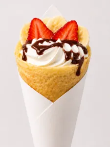
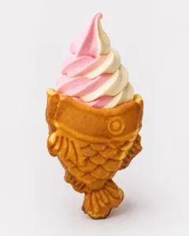

Guild Master Dylan is back at it again with another blog. Thankfully, they liked the Guild Master’s Guide to Taiyaki post. So much, in fact, that I got to write another one! I guess I am starting to get the hang of this. With one more of these, I can probably add it to my resume. I don’t want to bog you down too much with more lore and enunciation again. So, today, I am going to give you the tools you need to have a thrilling visit both here at the Guild Hall and with our neighbors as well!
Little Tokyo Little Rock
Did you know that Wand & Whisk Cafe isn’t the only themed environment at the Outlets of Little Rock? We built this storefront to coincide with our wonderful neighbors, friends, and coworkers at both Otaku Takeout and The Dojo.
Otaku Takeout is what started it all. Our founders built a haven for pop-culture fans and lovers of Japanese culture alike. With rows and rows of anime figurines and Pokemon plushies it really is like paradise. The back area is themed akin to a Japanese market. Featuring imported snacks galore and even a Pagoda-style bar.
A small, hidden entrance sits off to the store’s side. It opens up into one of Little Rock’s best-kept secrets. You have just entered into Lucky Cat Arcade, a spin-off of Otaku. It fills two retail spaces with imported Japanese arcade games and UFO catchers. This arcade also includes the only Pachinko arcade in Arkansas. I personally get caught up in Mariokart more than anything else. (The green shell is underrated) Both Otaku Takeout and Lucky Cat Arcade are approximately a grueling 10 second walk from our front door at Wand & Whisk across the breezeway.
Immediately next door is our final neighbor store, The Dojo. This was my personal most visited store prior to the Cafe. (I am a weak man for Snorlax Pokemon Cards) They are a premiere trading card store that is fully themed to look like a Japanese Dojo (shocking, I Know). They even have a full scale suit of Samurai Armor guarding the most worthy (expensive) of cards. With all four of these spots we have created a Little Tokyo District here at the Outlets that you can truly enjoy the whole day at. I want to give you just an example of what that might look like.

Morning: The Most Important Meal of The DayI have heard for almost all of my life that breakfast is the most important meal of the day. Now I am not sure if that is accurate or not, but what I can say is that we can make you a pretty tasty meal over at Wand & Whisk. You can start your day in the Little Tokyo District by coming over and trying one of our magical crepes.
A crepe is nothing but a thin pancake rolled and stuffed with fruit, whipped cream, and other toppings. I personally think the best crepe to start your day with is the Classic Japanese Crepe. Deliciously stuffed with fresh strawberries, banana, whipped cream, nutella spread, and frosted flakes. Honestly that’s pretty spot on for what’s on the table in every movie breakfast scene ever (minus the bacon sadly). While chowing down on our crepes you might as well take a seat and enjoy an episode or two of whatever magical girl or kawaii anime we might be playing that day. Throw in a Stamina Potion Float for a little energy and with that you are off to have yourself a magical day.
Midday Quests: Snacks, Shopping, and Arcade Runs
After a peaceful and tasty start, you are fully charged to go over to Otaku Takeout. Browse the rows and rows of figurines or fill a shopping basket full of snacks to work on later. Some of my personal favorites to keep an eye out for include: Garlic Steak Doritos, Sting Strawberry Energy Drink, and Shonen Banana Cream Soda. Once you have shopped your heart out, feel free to charge up your point card and head on over to the arcade.
The first room is going to have the most variety. From Mariokart to Dance Dance Revolution or House of the Dead to Bomberman, they have it all. One of the best bits of insider knowledge to know is that the save state cards are for sale at Otaku Takeout. Many of the arcade machines will ask you to scan a card to save your player data. This allows you to track player data or unlocks across plays. With these cards you can finally use that Golden Kart you unlocked in Mariokart without the next game resetting your data. Some games (especially the rhythm games) are only in their trial mode unless you scan one of these cards. Keep this in mind before you work up a sweat grinding on DDR.
Linner or Dunch: Ramen Bar Time and Happy Hour
After that workout on the dance machines I can only next recommend a hot lunch to fuel yourself for the rest of the day. Otaku actually has one of Arkansas’ only Self-Serve Ramen Bars. Grab yourself some ramen, nori, and buldak hot sauce and use the ramen water dispenser to make perfect al dente ramen. Try mixing the Black Garlic ramen with the Soy Sauce Flavored ramen for a surprisingly good pairing.
Take a seat at Otaku’s Bar and enjoy their anime of the day. And if you time it right, you might just get lucky and make it to Otaku’s Bar Happy Hour. Adults can enjoy a Sapporo or Thousand Crane Sake while they partake in their ramen. Now with a drink in hand and ramen in your stomach… It is time to relax, watch anime, and start planning your decision for one of the hardest choices of the day.
Afternoonish: Choose Your Luck
Now that you’re full of ramen, drink in hand, it’s time to make the hardest decision of the day. Depending on what kind of adventure you’re looking for, we have two primary ways to test your luck in the district:
1: Go to the Lucky Cat’s Pachinko Lounge
Head into the back room of Lucky Cat Arcade to check out Arkansas’ first and only Pachinko parlor. Think of Pachinko as a hybrid between a pinball machine and a slot machine….fire the metal balls and try to trigger a lucky run. Instead of cash, you’ll earn points toward our massive prize wall in Otaku Takeout. If Pachinko isn’t your speed, test your skills on the Japanese UFO Catchers or the Pokemon Dropper game. I am not supposed to say, but there is a trick to getting the hook-based UFO Catcher. If you line up the hook with the ring and then go one tiny baby smidge behind it, you will get it 1 out of every 10 times as opposed to 1 out of every 400. My statistics are based on personal experience. I wish you better luck than me.
Or
2: Open Booster Packs at the Dojo
If flashing arcade lights aren’t your vibe, head next door to The Dojo. It’s central Arkansas’ premier spot for trading card games, stocked with booster packs for everything from Pokémon to One Piece. Test your luck and see if you can pull that chase card you’ve always been after. Right now, I’m personally hunting for Ethan’s Ho-Oh EX from the Destined Rivals set so if you happen to pull it, come over to the cafe and let’s talk business! The Dojo also hosts weekly evening events like Magic: The Gathering Events on Fridays, One Piece on Sundays, and casual open play throughout the week. Be sure to check their website for an up to date look at weekly events! So no matter what day you are here there is always something going on around the community.

Evening: Rest and Rewards
After a long day of questing through Japanese markets, claw machine raids, and TCG duels, every weary adventurer needs a place to tally their loot and restore their stamina.
Head right back to where your journey began at the Wand & Whisk Café. Grab a seat on our cozy lounge couch, order a warm Taiyaki Soft Serve Ice Cream, and pick out a volume from our manga library as the sun sets over the Little Tokyo District. Treat yourself to a sweet victory reward while trading your pull highlights from The Dojo or showing off the prizes you snagged at Lucky Cat Arcade.
And with that… you have successfully spent your day here at Little Tokyo in Little Rock. Definitely check back real soon! We have special events and new menu items every week.
Filed under Guild Master's Blogs · Tagged Little Tokyo, Little Rock